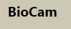

Creo que sería útil para mi trabajo en el jardín. Sería una gran ayuda poder tomar una foto de una planta desconociday recibir información detallada sobre su identidad y características. Además, si la aplicacion también proporciona consejos prácticos y útiles sobre el cuidado de las plantas, sería una herramienta invaluable para ayudar y mantener mis plantas.
Estas son las herramientas que tenemos para ti.